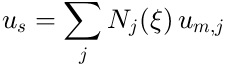

Connections: Ties, Couplings and Joints
Bodies are meshed separately, so their meshes do not match at interfaces. They are connected by ties (surface to surface), couplings (a rigid patch on an elastic body) and joints (between reference points).
Contents
Bonded ties
ns = a.tie(master, slave, Tol=, Stiffness=, Select=)
Slave surface nodes within Tol of the master surface are constrained to the point of the master face they touch:

The constraint is exact and is removed in T. Use the finer mesh as slave. Tol defaults to 10% of the median face edge of the finer surface; Select restricts the slave nodes (e.g. partial bonding). A rigid body is always made the master. See Tutorial 4.
Elastic interfaces
With Stiffness = [kn kt] (N/m^3, per unit area, normal and tangential) the slave nodes are connected by distributed springs instead: a glue layer, rubber pad or contact stiffness. A scalar sets kn = kt.
Couplings
r = a.couple(body, sel, Name=, Point=)
A coupling (like Nastran's RBE2) makes the selected nodes of an elastic body follow a new 6-dof reference point (at their centroid, or Point), e.g. a bearing bore or an end face. It returns the reference name, which can be used in joints, supports and a.dof.
Joints
j = a.joint(A, B, type, Point=, Axis=, Frame=, Free=, Stiffness=, Name=)
A joint connects reference point B (a rigid body or a coupling) to A, which may be 'ground'. B follows A except for the released directions, which become joint coordinates: ordinary dofs that can be loaded, supported (locked), used as outputs or as Craig-Bampton boundary dofs. Stiffness adds springs on them.
| Type | Free in the joint frame |
|---|---|
| fixed | none |
| revolute | rz (about Axis) |
| prismatic | uz (along Axis) |
| cylindrical | uz, rz |
| spherical | rx, ry, rz |
| planar | ux, uy, rz (in the plane normal to Axis) |
| free | all six: a bushing, with Stiffness |
Free gives any other mask [ux uy uz rx ry rz]. Released directions without stiffness are mechanisms: they appear as 0 Hz modes.
Closed loops
Joints may close kinematic loops (e.g. a four-bar linkage). Joints are processed in creation order; a joint that closes a loop, or whose B side already follows another joint or is supported, becomes a cut joint. Its constraint is removed exactly by QR coordinate partitioning, which also detects redundant constraints (planar loops in 3D). Define driving joints first: their coordinates stay independent.
Transmissions
t = a.transmission(joints, c, Stiffness=, Dirs=, Name=)
Relates coordinates of different joints, e.g. a belt, gear, cable or rack. The "stretch" is delta = sum_i c_i s_i. With Stiffness = k it is a spring on delta (an elastic belt); without stiffness it is the exact constraint delta = 0 (an ideal gear), and the first joint listed keeps its coordinate. Dirs selects the coordinate of each joint.
a.transmission({'motor', 'shoulder'}, [1/N -1], Stiffness = k, Dirs = {1, 3});
a.transmission({'gear1', 'gear2'}, [r1 r2]); % meshing gears
The motor inertia is seen as N^2 J_m at the joint. Shaft loads from belt tension are not modelled.
Posing joints
a.pose(joint, value)
Sets a joint to a finite angle (rad) or offset (m), relative to the pose in which it was created, and moves everything on its B side rigidly. The next a.system() is linearised about the new pose. Posing a closed loop is not supported yet. See Tutorial 7 and the two-link arm example.